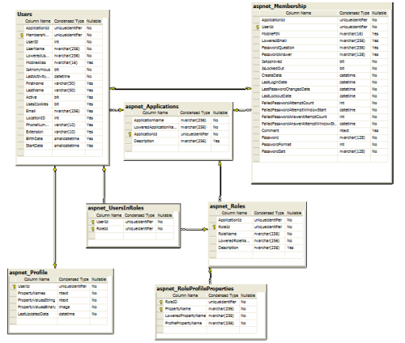

Tag: sql
Oracle String SQL Query using a DateTime from C#
Posted by bsstahl on 2009-03-07 and Filed Under: development
The following statement builds a C# string containing an Oracle SQL query that uses a DateTime specified in the .NET code. It uses the Oracle TO_DATE function to convert the string date to an oracle date object and specifies the format of the string date for both the C# output and the Oracle input. Using this statement, there can never be a date format mismatch since the same format is specified at both ends.
string sql = string.Format("select \* from MyDB.MyTable t where t.MyDate > TO\_DATE('{0:MM/dd/yyyy hh:mm}', 'MM/dd/yyyy HH24:mi')", DateTime.Now);
I have found myself using this type of statement fairly often to create tools that help me do my job. For what it's worth, I wouldn't put this type of code in production since you rarely want to execute a query from a string in a production environment.
Tags: csharp oracle sql datetime dotnet
SQL ERD for Membership and Other ASP.NET 2.0 Services
Posted by bsstahl on 2006-10-02 and Filed Under: development

Tags: membership provider sql
Sample SQL 2000 XML Query Courtesy of AE
Posted by bsstahl on 2006-05-25 and Filed Under: development
Here are some Sample SQL 2000 XML Queries.
DECLARE @sxml varchar(8000) SET @sxml = '<?xml version="1.0" encoding="UTF-8"?> <Change xmlns:xsi="http://www.w3.org/2001/XMLSchema-instance" Version="1.0"> <SourceApplication><Name>Intranet</Name></SourceApplication> <DestinationApplication><Name>FundsDB</Name></DestinationApplication> <UserName>JDoe</UserName><IPAddress>192.168.101.2</IPAddress> <BusinessEntity><Name>Fund</Name></BusinessEntity><ChangeItems> <ChangeItem><OriginalData>ABC Fund</OriginalData><NewData>123 Fund</NewData> <DataID>5</DataID><Field><Name>Name</Name></Field></ChangeItem> <ChangeItem><OriginalData>Type A</OriginalData><NewData>Type B</NewData> <DataID>5</DataID><Field><Name>Type</Name></Field></ChangeItem> </ChangeItems><ChangeDate>2004-10-12T12:57:00-07:00</ChangeDate> <CommandText>s\_SaveFund</CommandText></Change>' --- ----- ----- DECLARE @ixml int --- ----- ----- EXEC dbo.sp\_xml\_preparedocument @ixml OUTPUT, @sxml --- ----- ----- SELECT x.\* FROM OPENXML( @ixml, '/Change', 1) WITH ( SourceApplication varchar(64) 'SourceApplication/Name', DestinationApplication varchar(64) 'DestinationApplication/Name', UserName varchar(64) 'UserName', IPAddress varchar(23) 'IPAddress', BusinessEntity varchar(64) 'BusinessEntity/Name', ChangeDate varchar(16) 'ChangeDate', CommandText varchar(128) 'CommandText' ) x --- ----- ----- SELECT x.\* FROM OPENXML( @ixml, '/Change/ChangeItems/ChangeItem', 1) WITH ( OriginalData varchar(2000) 'OriginalData', NewData varchar(2000) 'NewData', DataID varchar(32) 'DataID', Field sysname 'Field/Name' ) x --- ----- ----- EXEC dbo.sp\_xml\_removedocument @ixml --- ----- -----
Tags: xml sql code sample
T-SQL 2005
Posted by bsstahl on 2006-05-08 and Filed Under: development
The first session I attended was T-SQL 2005 Enhancements, Tricks and Tips. David Lundell was the instructor and did a nice job.
Some key points were:
- Common Table Expression (CTE) - A way to alias a query for use within another query. This can also be used to execute queries recursively.
- nTile - Allows a resultset to be "partitioned" into segments. i.e. 100 segments make it a percentile, 4 segments is a quartile, etc.
- Rank - Similar to nTile except the values are ranked in order. If two or more items tie for a rank, subsequent ranks are skipped. That is, if two items are tied for first, the next item would have a rank of 3.
- Dense_Rank - Same as Rank only no ranks are skipped, regardless of ties
- Row_Number - Same as Dense_Rank only with no duplicates, just lists the items in order from 1..n. Ties are arbitrarily broken and consistant order by broken ties is not guaranteed.
- Pivot - Allows the creation of Pivot Tables but in my opinion, won't be very useful until we can set the columns dynamically. Currently in SQL 2005 the Pivot columns have to be explicitly defined.
Tags: code camp sql
Dictionary of PDC ‘03 Terms
Posted by bsstahl on 2003-11-02 and Filed Under: event development
Instead of posting a summary of the last 2 days of the PDC, I decided to summarize the entire PDC as best I can by creating a glossary of terms. These terms came out of the PDC as either new, having a modified meaning, or greater importance than before.
WinFX – The code-name for the next generation of the .NET Framework. Key features of WinFX include Indigo, Avalon and WinFS.
Longhorn – The code-name for the next generation of Windows built on, and to work with, WinFX. Longhorn provides the user interface features of Avalon, the file-system improvements of WinFS, and the service support of Indigo.
Indigo – The code-name for a set of managed services in the .NET Framework created to support a unified coding structure for applications developed using the services model. In a very-real sense, Indigo makes the SOAP implementation available to all types of services, not just web services and unifies the three main development standards for architecting solutions using the services model, Web Services, .NET Remoting, and Enterprise Services, under one set of managed objects.
WinFS – Vast improvements in the Windows File System that take us closer to being able to view the file system as a relational database. The addition of extensible metadata schema on top of NTFS will allow users to view data in various ways without having to physically reorganize the data. For example, you could view documents by project first, then author, or author first, then project, without having to change the underlying structure of the file system. Currently, with folders, we can only choose one way or the other.
Avalon – The code-name for the next generation of graphics processing engines in Windows which, among many other things, will put much of the graphics processing burden where it belongs, in the GPU (graphics processing unit) rather than using standard CPU cycles. This will allow for vast improvements in application graphics without impacting performance.
Yukon – The code-name for the next generation of SQL Server. Yukon runs in-process with the Common Language Runtime allowing queries to be executed using any CLR language. Yukon also provides support for XQuery allowing procedures to return query results from XML data which was returned as a result of a T-SQL query. Yukon also provides full support for SQL Cache Invalidation (see below).
Whidbey – The code-name for the next generation of the Visual Studio.NET IDE. Whidbey provides developers with the language tools that help create applications that take advantage of the new features of WinFX and aid in the development of applications that utilize the Services Model (see below).
Orpheus – The code-name for the next generation of Visual Studio.NET after Whidbey.
Services Model – The design philosophy in which application tiers are divided into services by functionality. Often, these tiers are divided into Presentation Services, Business Services (Business Logic) and Data Services. Indigo is designed to support the creation and interaction of these services.
SQL Cache Invalidation – The interaction between SQL Server and ASP.NET that allows the database to invalidate HTML stored in the IIS cache when the data that the page is based on becomes stale. This ability exists, using new utilities from Microsoft at a table level from SQL Server versions 7 and 2000 and is available to the row level in SQL Server Yukon.